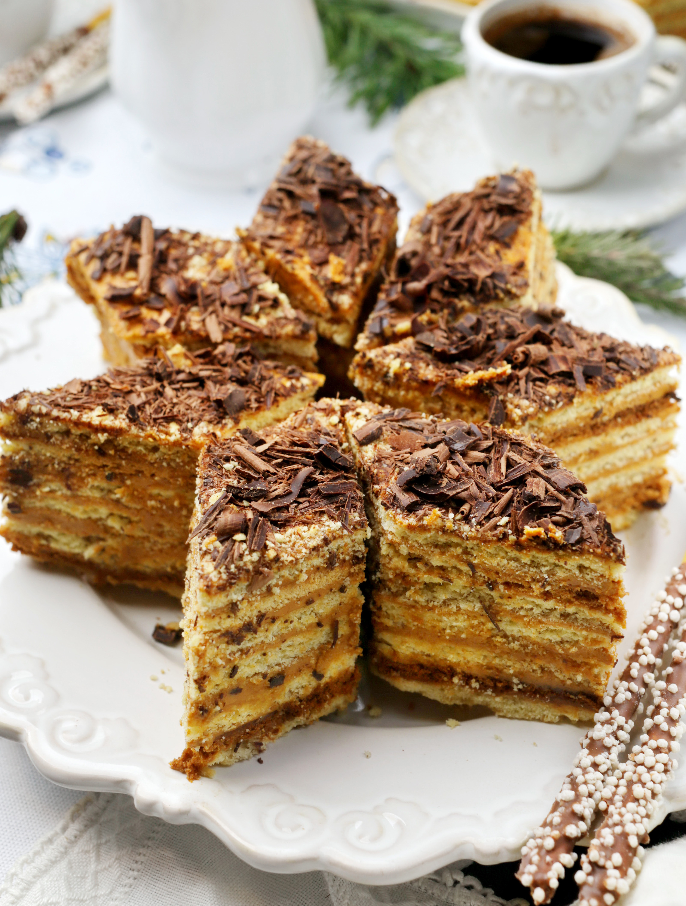

Традиционный армянский торт на Новый год и праздники. В основном этот торт для тех, кто не любит много крема, он суховат, даже после пропитки. Но в этом и есть его прелесть. Впрочем, для тех, кто любит более влажные торты, можно приготовить заварной крем и затем его смешать с размягченным маслом и вареной сгущенкой.
для заварной основы:
Надо взять 1 яйцо (или только желток), смешать с 200 мл молока, 100 г сахара и 2 ст. л. кукурузного крахмала. Можно добавить 2–3 ст. л. какао-порошка. Поставить на слабый огонь и довести до кипения, постоянно помешивая, затем снять с огня (можно взбить блендером или миксером, если вдруг образовались комочки). Накрыть крем пленкой в контакт и остудить до комнатной температуры и смешать с масляным кремом. Такой крем наносят на горячие коржи для лучшей пропитки.
другой вариант:
На 250 мл сливок взять 70 г сахарной пудры, взбить до устойчивых пиков и смешать с масляным кремом.
Обычно готовят двойную норму теста и крема, и пекут во весь противень, поэтому традиционно торт квадратной или прямоугольной формы, невысокий, максимум 10–12 коржей, но чаще 7–8. Перед подачей торт нарезается ромбами. После такой нарезки остается много кусочков произвольной формы, поэтому будет удобнее его готовить круглым и нарезать как обычно, сегментами. Готовый торт посыпают тертым шоколадом. Желательно взять горький или темный шоколад, он будет отлично оттенять сладость крема.
для теста:
для крема: